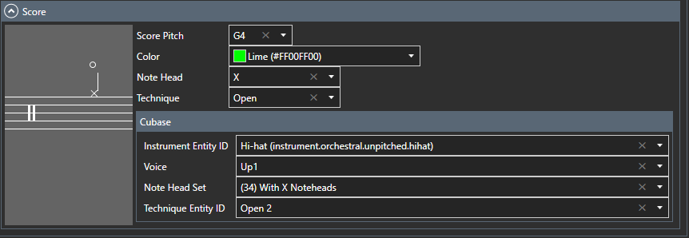

Partes
Editar partes y articulaciones de batería.
Editar partes de batería

- Seleccione una parte de la lista de piezas. Si la pieza no existe, agréguela.
- Realice ajustes en la lista de articulaciones. Lista de articulaciones
Registre las articulaciones utilizadas en la pieza

.
- Nombre
- Introduzca el nombre de la articulación.
- Articulación alternativa
- Utilice esta articulación especificada si no se utiliza ninguna articulación en el mapa de batería. Puntuación
Configure la visualización de la puntuación para la parte
. Haga clic en la sección del encabezado de la partitura para abrirla o cerrarla. Si no necesita la función de partitura de batería, puede dejar los valores predeterminados como están.

Para configurar la puntuación de Cubase, debe configurar el destino de instalación de Cubase en la pantalla de configuración.